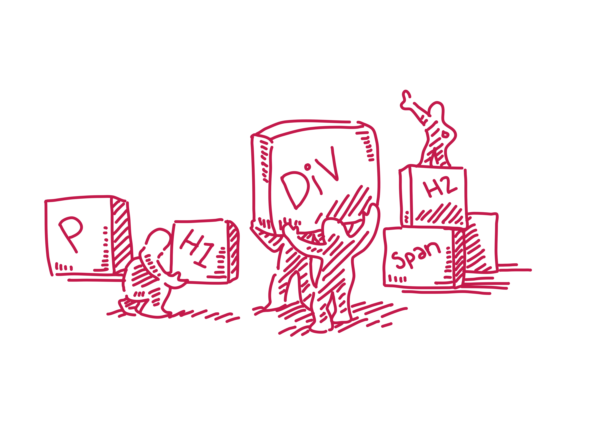
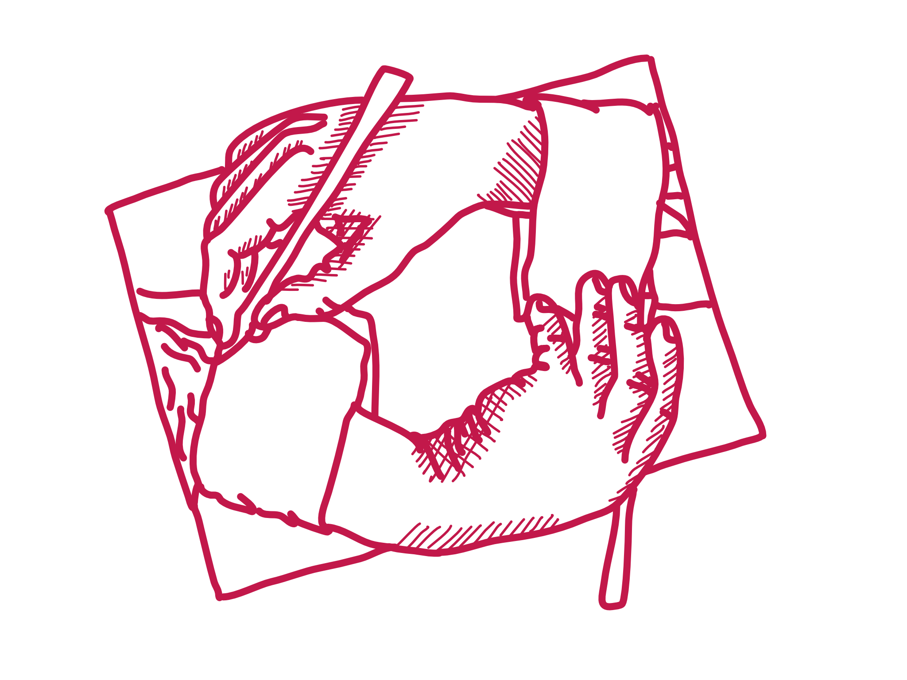
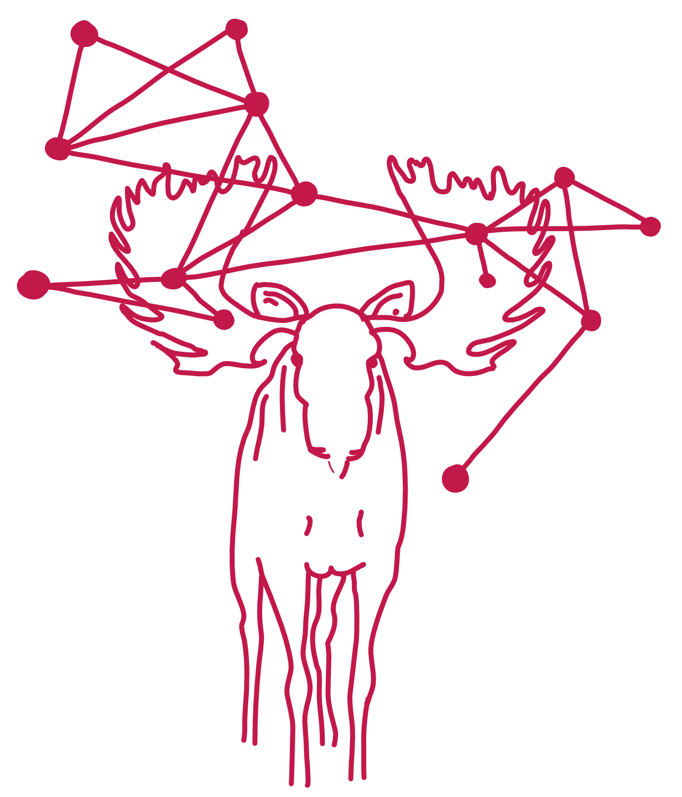
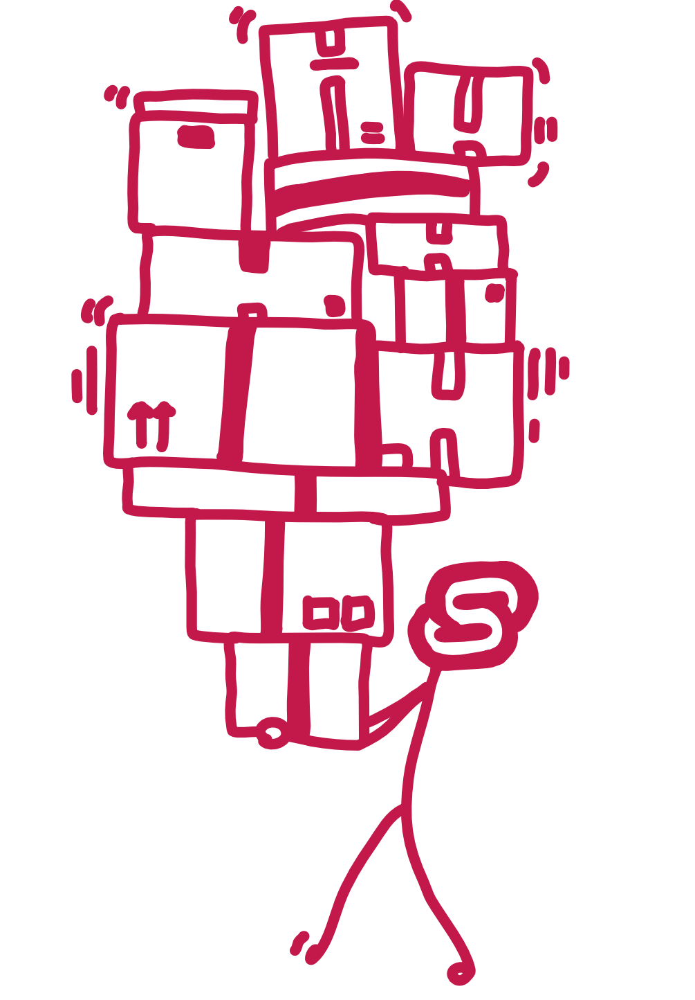
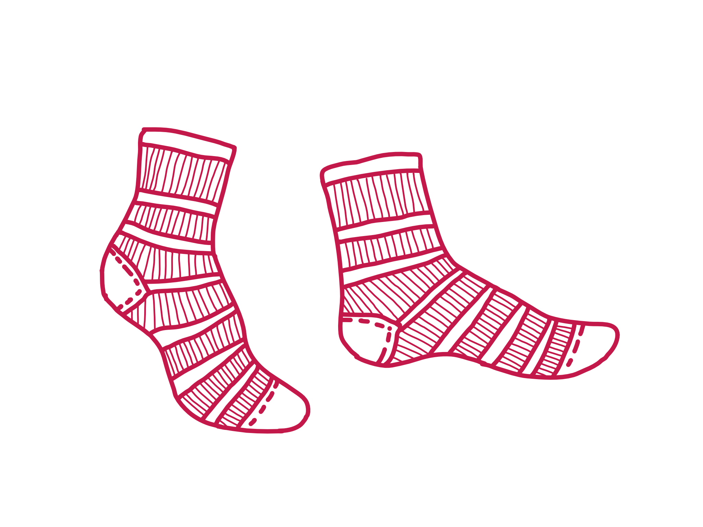
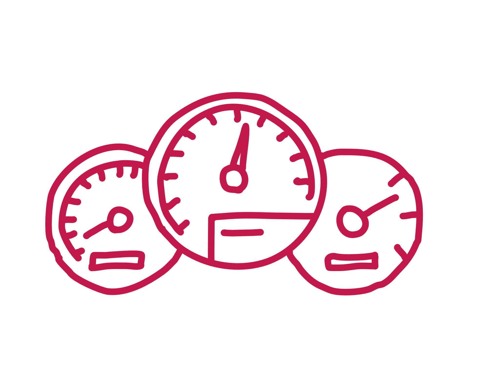
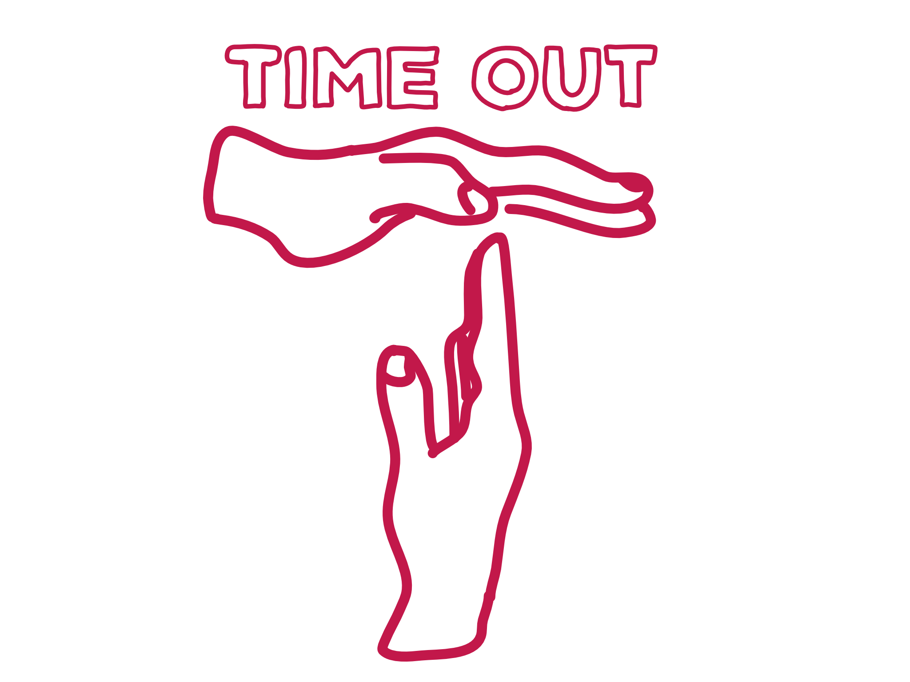
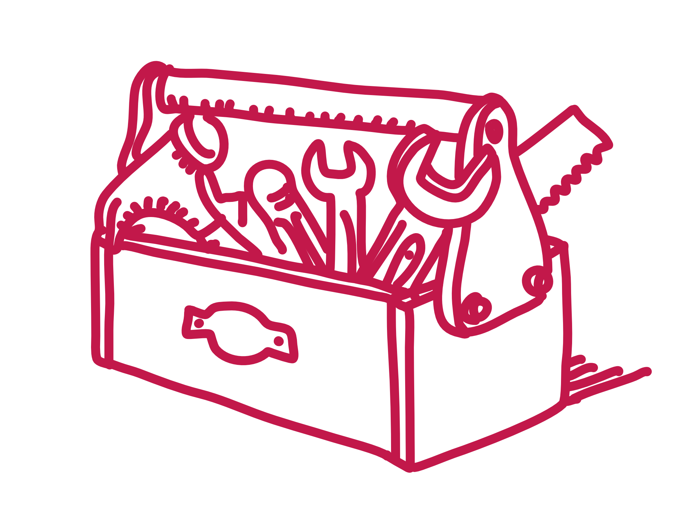

maya
gans
blog
dataviz
projects
resume
writings
explaining techinical concepts to myself
R
4 min read
Moving DOM Elements in Shiny
A datatable case study to move around DOM elements in Shiny.
Feb 15, 2022

JavaScript
5 min read
Skip Links
Creating a Skip Link in Shiny apps!
Aug 30, 2021
JavaScript
3 min read
Recursion again and again and again
Trying to understand recursion by explaining it.
Aug 30, 2021

JavaScript
3 min read
R Functions I Took for Granted
An ongoing list of functions I took for granted in R as I learn JavaScript
Aug 30, 2021
JavaScript
11 min read
D3 to R to D3
Documenting using D3 in R (without Observable)
Aug 30, 2021

JavaScript
6 min read
Being Trendy, Learning Svelte
Documenting my first foray into the Svelte JavaScript frontend framework
Aug 30, 2021

JavaScript
3 min read
GSap and Xaringan
Using the GSAP animation library in Xaringan slides
Aug 30, 2021

JavaScript
4 min read
Custom Shiny Input
Creating a custom Shiny Input
Aug 14, 2020

R
6 min read
My First Live Coding Interview
I tanked my first live coding interview but that still made me want to find answers to all their questions
Aug 27, 2019
JavaScript
4 min read
Why Would I setTimeout(0)?
Trying to understand the weird world of async javascript
Aug 14, 2019

JavaScript
6 min read
JavaScript Statements
Statements aren't functions? Explaining the different and walking through some different JavaScript statements.
Aug 2, 2019

JavaScript
3 min read
WTF is a Prototype
Walking through what JavaScript prototypes are so I can better understand them myself
Jul 22, 2019
No matching items